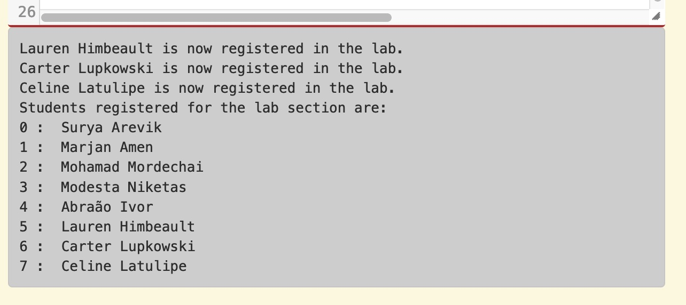
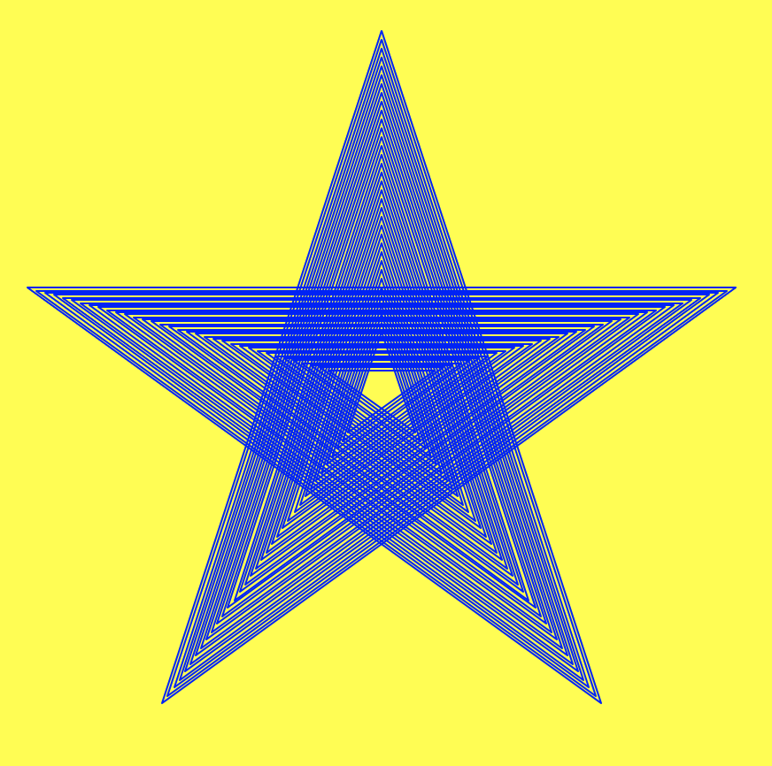

12.10. Week 10 Lab¶
Material Covered
Indefinite Iteration (Chapter 10)
12.10.1. Level 1¶
In this level you will write code to add student names to a list of students registered in a lab, until the user is done entering names. You start with a list that already has some student names in it. The screenshot below shows what the final interaction with the user should look like.
{kind=link}
Note
This code needs to follow the general pattern in which a boolean flag is initialized to true outside a loop, and then the loop executes an unknown number of times, but at some point, due to something that happens, the boolean flag gets set to false and the loop stops executing.
In the given code, there is one line that is commented out. You can run the given code and you will see that it prints out the list of students registered in the lab. You need to define the register_lab_students function. That function should accept a list as a parameter and return a list.
Inside the function, you need to create a flag to indicate that there are still more students to register. Name the flag something appropriate and initialize it to True.
Now create a while loop that will continue to execute while the boolean flag variable is true.
Inside the while loop, ask the user to enter a student name, or type q to quit.
If the user typed ‘q’ or ‘Q’, you should set the boolean flag to false. Otherwise you should add the name to the list, and print out a message noting that the student has been added (see screenshot above).
At the end of the function return the list.
Test your code to make sure it is working properly.
12.10.2. Level 2¶
In this level you will make a turtle draw a 5-pointed star pattern that looks like this:
{kind=link}
How many stars have been drawn to create this? It’s hard to tell. You could try to zoom in and count, and then create a for loop, but a better and easier way to do this is to keep on drawing smaller stars until the size of the star is as small as you want the inner star to be. This type of iteration is indefinite: we don’t know how many stars are needed (so we don’t know how many times we need to loop), but we do know what our stopping condition should be (when the size of the next star would be smaller than the smallest star we want). Follow the steps below to create this star image.
In the main() function, create two local variables, one called size and one called top. Set top equal to 200 (the top of the window) and size equal to 400 (this will be the initial side length of the star).
Still in main(), move the turtle to the top center of the window without drawing a line, then rotate it to the right 72 degrees and put the pen back down, so the turtle is ready to draw.
Define a function called star() that takes in two parameters: a turtle and a side length for the star. In this function you should have a for loop that will move the turtle around to draw a five sided star (DO NOT use the goto() method). To get the correct shape, rotate the turtle 216 degrees to the left after drawing each side of the star (note that there is a global constant defined for this!). Make sure you use the passed in length for the size of each star side.
Call the star() function from main, passing in the turtle and the size. Make sure you’re getting the correct output (see below).
{kind=link}
In main(), create a variable called smallest and set it to 50. This is the smallest size of star that you want to draw.
Create a while loop that will run while size is bigger than smallest. Inside the loop, call the star() function. Then decrement size by 10. Run this code, and you should see the output below.
{kind=link}
To keep the star in the center, you also need to decrement top by 5 and move the turtle to (0,top) again during each loop iteration. Be sure to lift the pen up and down to prevent added lines! Also, after all of the drawing is done, you should hide the turtle.
Note
The benefit of using a while loop here is that we don’t have to try to figure out how many times to run the loop. The while loop’s repeat until some thing is false logic takes care of that for us. You can play around with different values of smallest to control when the turtle stops drawing, which will generate different star effects.
12.10.3. Level 3¶
In this level you will make a program that takes in user input to move a turtle around the screen until the user wishes to stop. You will also get the window coordinates and use these to adjust the coordinates the user enters (so if the user enters a coordinate that is off-screen, you change that coordinate to be on-screen).
In the main function, create a boolean variable and set it to True, this will be the variable used in our while loop check and we want to keep on drawing while the variable is still True, so give the variable a name that reflects that.
Create a while loop using the boolean variable created in step 1.
Inside the while loop, start by getting the user input, “Enter an x and y coordinate separated by a comma (q to quit): “.
Check if the user entered q. If they did, change the boolean variable appropriately, otherwise split the user input string (using ‘,’) to create a list that contains the two coordinages, and continue with the steps below to check the coordinate values and move the turtle.
Create two new variables x and y, setting them to the two values in the coordinate list that you created when you split the input.
Check and adjust these values. For each value, check if they are less than or greater than the appropriate constants (LEFT, RIGHT, TOP, BOTTOM) that are defined for you, and then change them if they are. For example, if the turtle’s x value is less than LEFT (so it would go off the left side of the canvas), the x value should be changed to LEFT.
Now move the turtle to the appropriate location